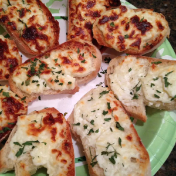

Romano Cheese Crisp

French bread topped with a delicious cheese
spread makes for great finger food.
Ingredients
- 1 cup grated Romano cheese
- 1 clove garlic, minced
- 1 (8 ounce) package cream cheese, softened
- 1 (1 pound) loaf French bread
Steps
- Preheat oven to broil. Slice bread into
1/2 inch slices.
- In a medium-size mixing bowl, combine Romano cheese,
garlic, and cream cheese. Spread the cheese mixture
onto the sliced French bread.
- Broil for about 3 minutes, or until the cheese
melts.
Back to recipes